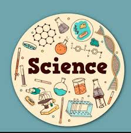
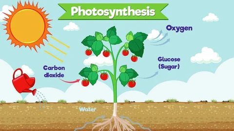
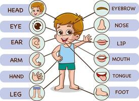
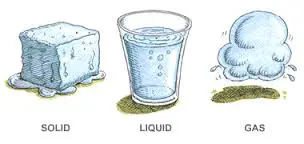

Chapters:
- Plant and Animal Life
- Human Body Systems
- States of Matter
- Force, Work and Energy
- Our Enviroment
- Solar System and Space

Science is constantly at work all around us, even in the quietest moments of our daily lives. Every time you turn on a light switch or use a smartphone, you are witnessing the incredible power of electricity and physics in action.
The natural world right outside our windows relies on complex biological processes to thrive. Green plants silently absorb sunlight to create their own food through photosynthesis, which in turn provides the vital oxygen we need to breathe.
Even the simple act of cooking a meal is actually a fascinating chemistry experiment in disguise. When you heat food, molecules break apart and bond in new ways to completely change its flavor, texture, and color.


